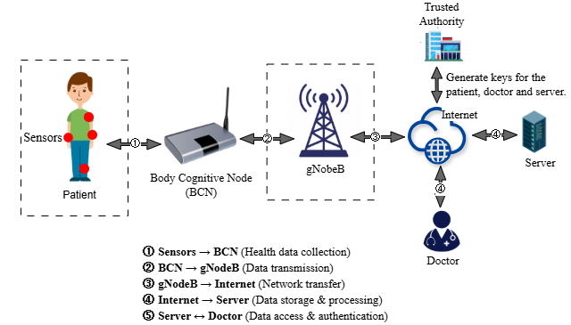
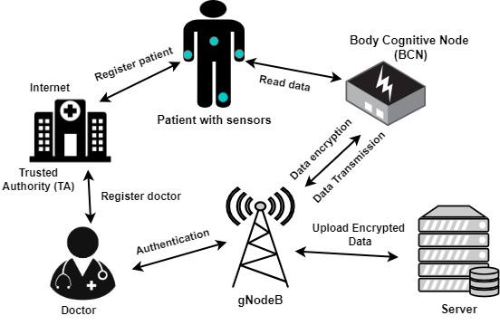

PhD in Computer Science and Technology
Nanjing University of Science and Technology
Sep 2026 - present
I am doing my PhD in Computer Science and Technology at Nanjing University of Science and Technology. My research focuses on AI security, privacy and security in IoT/IoMT, agentic security in IoT/IoMT, federated learning, and post-quantum security.
Nanjing University of Science and Technology
Sep 2026 - present
Zhejiang Normal University
Sep 2022 - Jun 2025
Highlights, awards, and talks.
Broad themes that drive my current and future work.
Securing AI systems and applying intelligent methods to detect threats in connected healthcare environments.
Protecting connected devices, communications, and sensitive data across IoT and medical IoT systems.
Exploring security and trust for autonomous agents operating in connected IoT and healthcare environments.
Developing privacy-aware collaborative learning approaches across distributed devices and organizations.
Designing cryptographic protections for connected systems that can withstand future quantum threats.
Recent work on AI for security, IoMT, and applied cryptography.


IEEE Annual Congress on Artificial Intelligence of Things (IEEE AIoT)
Track 4: Security, Trust, Privacy in AI and IoT
Zhejiang Normal University
Short reflections on research, tools, and academic life.